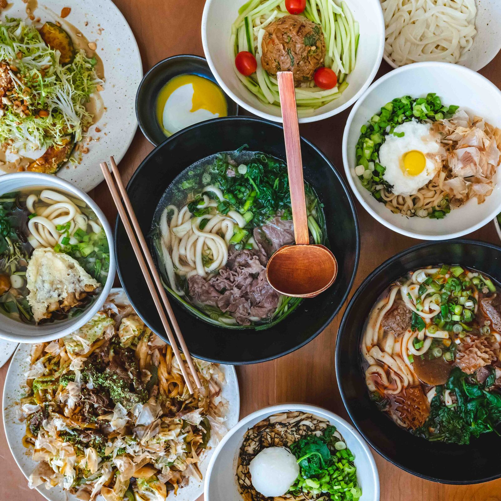
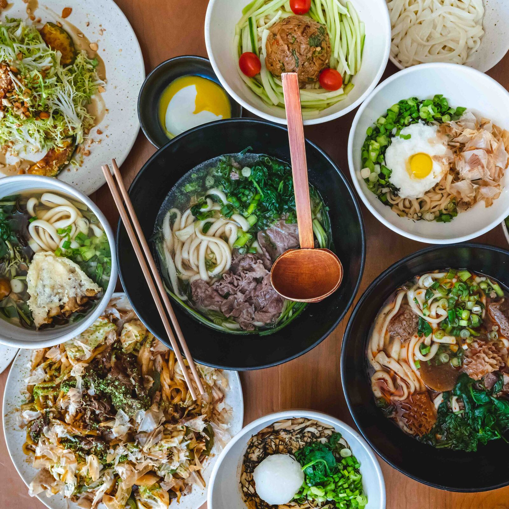

There are so many places to explore in Soho! Here are some perfect food spots for you to go to after your shopping trip!


Ruby's
First, we have my personal favorite - Ruby's. This was my staple meal for most of my summers at home, personal favorites include Crispy Rice Bowl and the Creamy Chicken Pasta. The food is comforting, filling, and all so healthy!

DomoDomo
DomoDomo is a Michellin star awarded restuarant with the freshest sushi you can get. The price is on the higher side, but the experience is so worth it

Mercer's Kitchen
Mercer's Kitchen has an amazing ambience and would be an amazing lcoation for dates. The location is a celebrity favorite and personally, one of the best burgers I have ever had.
here are some other photos of food from other neighborhood!

 
